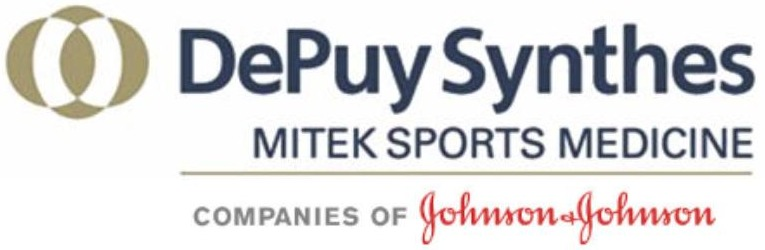
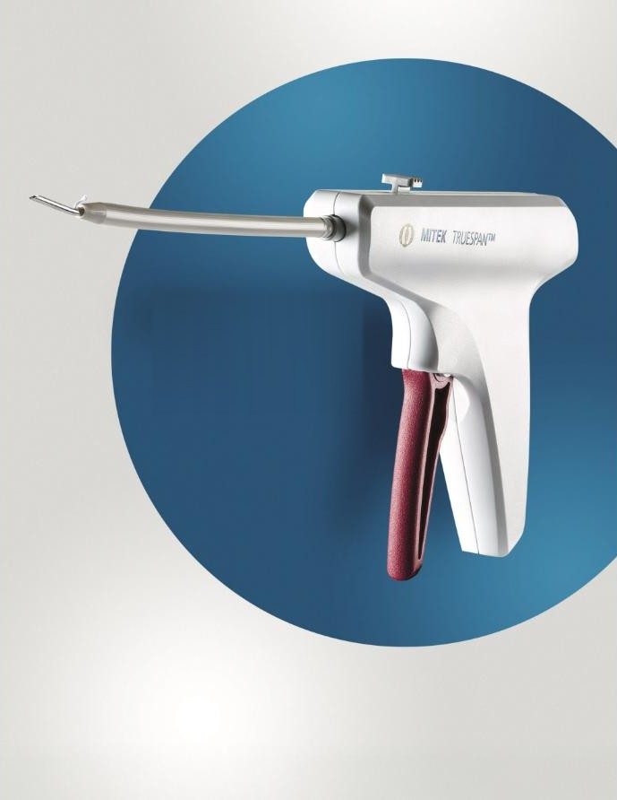

Sme distribútor produktov DePuy Synthes Mitek Sports Medicine, ktorá patrí do globálnej rodiny Johnson & Johnson. Dodávame ich nemocniciam a klinikám jednodňovej chirurgie na Slovensku. Špecializujeme sa na športovú ortopédiu a ponúkame jedno z najkomplexnejších portfólií v tejto oblasti na svete.
Naše inovatívne riešenia a technológie pomáhajú športovcom a aktívnym ľuďom dosiahnuť rýchlu a efektívnu regeneráciu po úrazoch a chirurgických zákrokoch. Vďaka dôrazu na presnosť a kvalitu poskytujeme nástroje, ktoré umožňujú úspešnú rehabilitáciu a návrat k špičkovému výkonu. V našej ponuke nájdete produkty a riešenia pre:
Využitím najnovších vedeckých poznatkov a technologických inovácií dokážeme neustále posúvať hranice športovej ortopédie. Naším cieľom je umožniť športovcom aj bežným aktívnym ľuďom, aby sa mohli čo najskôr vrátiť k svojej vášni a k životu bez obmedzení.
Spolupráca s poprednými zdravotníckymi inštitúciami a športovými organizáciami nám umožňuje poskytovať riešenia, ktoré spájajú najvyššiu úroveň odbornosti, bezpečnosti a efektivity.
V MTK medical s.r.o. veríme, že každý pohyb je dôležitý a že správna starostlivosť môže znamenať rozdiel medzi úspechom a obmedzením.
Ak hľadáte partnera, ktorý vám pomôže zabezpečiť excelentnú starostlivosť a podporu v oblasti športovej ortopédie, sme tu pre vás. Spoločne môžeme dať športovcom a aktívnym ľuďom šancu na plnohodnotný a bezbolestný pohyb.
Naše produktové portfólio je zamerané predovšetkým na rekonštrukciu a stabilizáciu kĺbov, najmä kolena a ramena. Súčasťou ponuky sú aj moderné artroskopické pumpy, presné shavery a vlastná rádiofrekvenčná technológia VAPR. Ďalej ponúkame širokú škálu kotiev, meniskálnych implantátov a rôznych systémov na rekonštrukciu kolenných väzov.
Dodávame kompletné artroskopické veže vrátane všetkej vizualizačnej techniky. Portfólio dopĺňa spektrum chirurgických nástrojov pre artroskopické operácie vrátane špecializovaných inštrumentov na prácu s tkanivami, prípravu štepov či vytváranie kostných tunelov. Zabezpečíme tak plne vybavené riešenie aj pre váš operačný sál.
Kladieme veľký dôraz na vzdelávanie – lekárov, sestier a operačných tímov, ale aj nás samotných. Organizujeme vlastné odborné podujatia a zároveň sa aktívne zúčastňujeme kongresov a sympózií na Slovensku aj v zahraničí. Vďaka tomu môžeme prinášať najnovšie poznatky, technológie a postupy priamo do každodennej praxe.
MTK medical s.r.o. – váš odborník a partner v oblasti športovej ortopédie.


Arthroscopic Solutions
Tel.: +421 905 639 951
Fax: +421 2 209 108 49
objednavky@mtkmedical.sk
Krajná 49/B
821 01 Bratislava
IČO: 56 507 844
IČ DPH: SK2122330441
© 2026 MTK medical s.r.o.